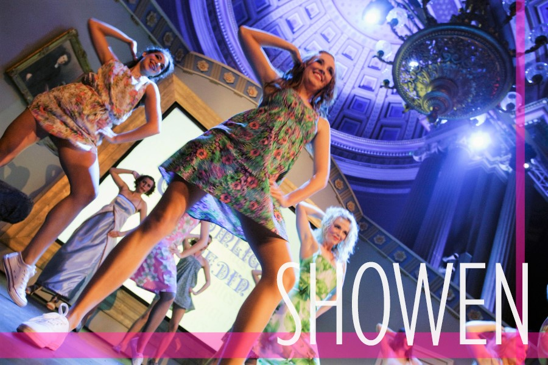
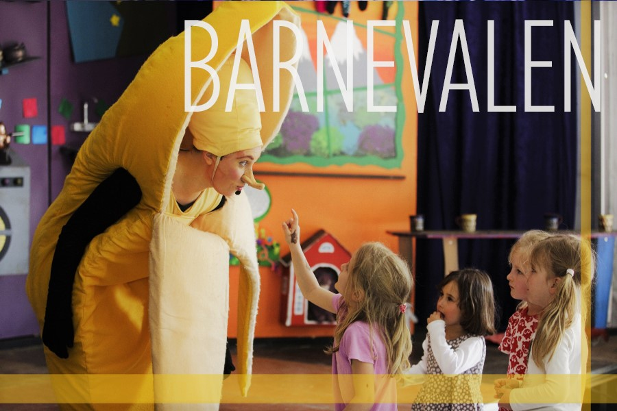
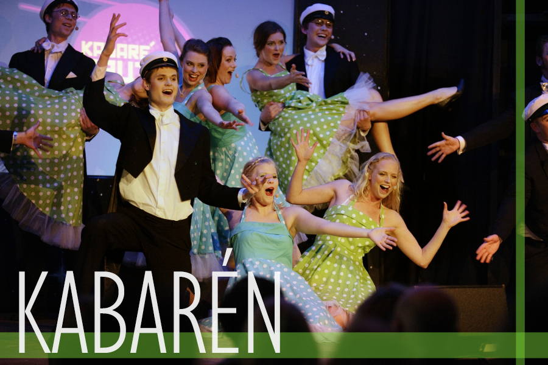

Nöjen
På olika sätt, i olika format och på olika ställen roas besökarna med allsköns karnevalistisk galenskap. Sedan tidigare år känner vi igen de Stora Nöjena: Barnevalen, Cirkusen, Filmen, Revyn, Showen och Spexet. Dessutom finns Smånöjena!


